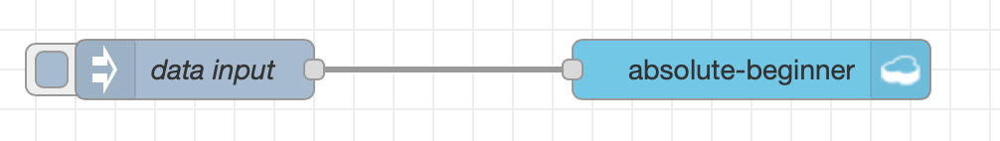
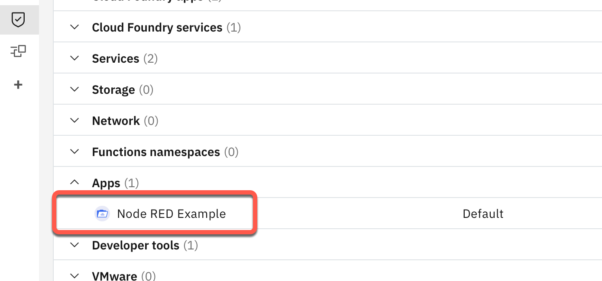
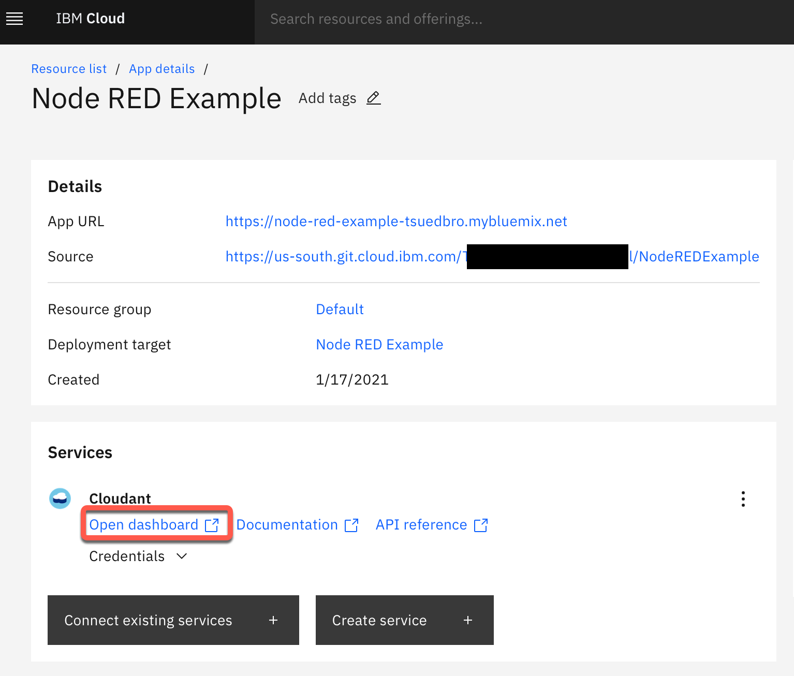
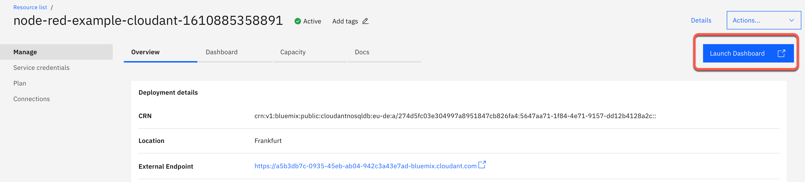
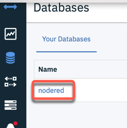
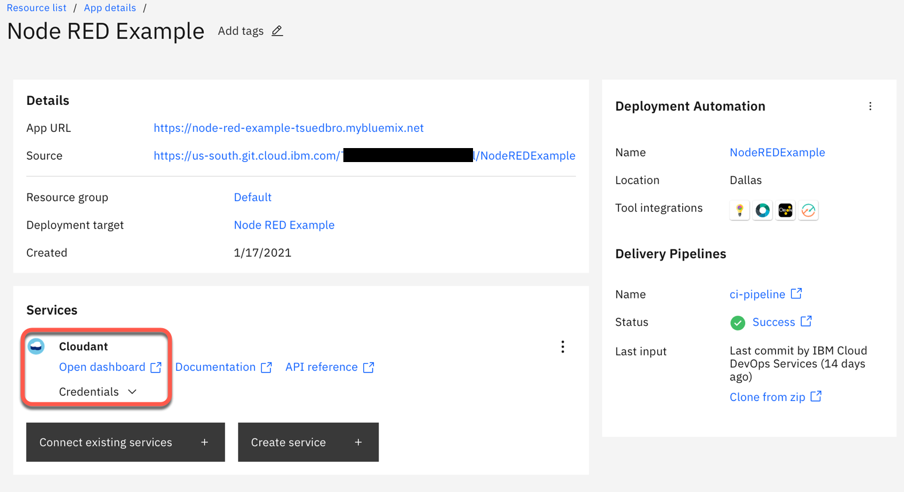
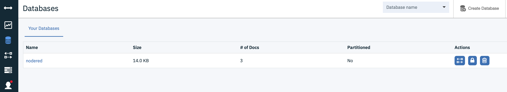

Create data entries YouTube (2:40)¶
In this part we create an inject and a cloudant out node.

Background: In our situation we will use Node-RED on IBM Cloud with and Cloudant service instance, which contains a database to save the flows and more for our Node-RED instance. We use Cloud Foundry as our runtime for the Node-RED instance and with the existing Cloudant service binding, we easily can reuse our existing Cloudant service to create an
absolute beginner databasewith acloudant outnode.
The image below shows the dependencies of application, binding and database service.

Step 1: Configure the inject node to create a JSON value¶

Step 2: Insert into the inject node following JSON¶
{ "user": {
"firstname": "Thomas",
"lastname": "Suedbroecker",
"country": "Germany"
}
}
Step 3: Open a new browser tap and login to your IBM Cloud account¶
Step 4: In the dashboard select `App¶

Step 5: Now press on your Node-RED App you created in the last video¶

Step 6: Select in the App Cloudant->Open Dashboard¶

Step 6: In the Cloudant database service press Launch Dashboard¶

Step 7: Now you can see the existing database nodered¶
Later we will find here our absolute-beginner database

Step 8: Add a cloudant out node and give the database the name: absolute beginner¶

Step 9: In the cloudant in node, verify you have selected Only store msg.payload object?¶

Step 10: Select Open dashboard for your Cloudant service in our existing Node-RED app¶

Step 11: Now press Launch dashboard¶

Step 12: Verify in your existing Cloudant service instance, that you don't have a absolute beginner database¶

Step 13: Press data input and verify in your existing Cloudant service was created a new database called absolute beginner¶